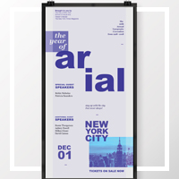

About Photo
About Description
About Me
Hello! My name is Patricia Garcia and I am a first year student of the Interactive Media Design course at Fanshawe. I graduated from the Graphic Design program in 2014. I hope to find a career in graphic design after graduating from this program.
Illustration Hobby
Illustration
I love illustration and have been creating art since I could hold a pencil. I have been using digital mediums mostly but I do enjoy using traditional methods such as Copics.
Design Hobby
Design
Ever since I studied Graphic Design I really enjoyed the process of creating and redesigning elements. I love branding and layout design the most. I hope I can learn enough about CSS and HTML to be able to discover how to do all of those cool looking things I see on the web.
Video Games Hobby
Video Games
I've always loved video games since I was little. I'm more of a fan of casual games and tend to stick with Nintendo games. Games have played a role in my life in terms of inspiration.